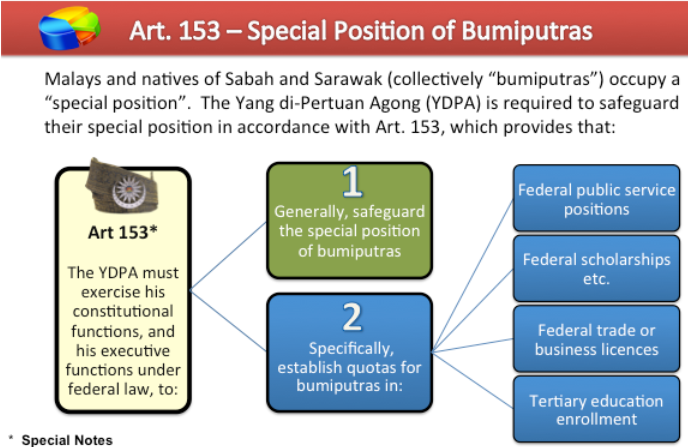

13 May Inciden
DAP and Gerakan
- The Democratic Action Party (DAP) was founded in October 1965 by a Malaya-based member of the PAP from Singapore and was effectively the successor to the PAP after Singapore was expelled in 1964
- The DAP is a center left social democratic political party and campaigned against Bumiputra privileges, mostly made up of ethnic Chinese and Indians
- In 1968, the Parti Gerakan Rakyat Malaysia (Gerakan) was formed from various dissolved parties such as the United Democratic Party and the Labour Party and became successful in the 1969 election, primarily in Penang
- Gerakan is a liberal political party and is majority ethnic Chinese and Indian
1969 General Election
- In the lead up to the 1969 elections the DAP, Gerakan, and People's Progressive Party ran together in a electoral pact
- The DAP won 13 Parliamentary seats and Gerakan won ??? seats
- In May 1969 in Malaysia and June/July in Sarawak/Sabah general elections were held
- The election resulted in the return to power of the Alliance Party (UMNO, MCA, MIC), although with a reduced majority (lost 2/3 majority required to pass contitutional amendments)
- The Gerakan Party and Democratic Action Party (DAP) campaigned against Bumiputra policies and made major gains
Nationwide Riots
- On May 12 1969, the Gerakan and DAP held a victory rally in Kaula Lumpur
- On May 13, the UMNO had their own planned event and this is where the riots broke out between a group of Malays and a Chinese bystander, the fighting eventually spread to the rally causing the riot to rapidly spread through the entire city
- On May 14 and 16, the riots led the Yang di-Pertuan Agong (paramount ruler) to declare a state of emergency and suspend parliament after the army was deployed with a shoot to kill order and a curfew were enstated to quell the violence
- The press was also suspended by reinstaned on May 18 but then censored on May 21
-
- Many non-Malays disliked the UMNO's attempts to create a common Malay identity such as increasing the use of the Malay language
- In June 1969, the riots broke out again when Malays attacked Indians (killing 15) but they were ended quickly
- Reports placed the number dead at 196 but international observers said it was closer to 600, mostly ethnic Chinese
- Over 450 houses were also burned to the ground, mostly Chinese
- The NOC reported that "recial politics" were the main cause of the riots and were reluctant to assign blame to the Malays and also blamed the Malayan Communist Party (MCP)
National Operations Council (NOC)
- Also called the Majlis Gerakan Negara (MAGERAN)
- After the state of emergency was declared, on May 15, Tunku was forced to step down as prime minister when parliament was suspended
- The NOC was the emergency government body led by Tun Abdul Razak and formed to restore law and order after Parliement was dissolved following the May 13 riots
- The goal of the NOC was to advance indigenous or ethnic Malay dominance (Ketuanan Melayu)
- From 1969-1971, the NOC governed Malaysia before the Parliament took over again
- The DAP boycotted the NOC after its formation in 1969
New Economic Policy (NEP)
- Economic Policy launched by the NOC in 1971 to act as affirmative-action and to increase the wealth of the bumiputra (Malays)
- This would be done through affirmative-action in education and in civil service employment
- The NEP aimed to basically restructure society to minimize the level of poverty in the country in order to attain national unity
- The ethnic Malays and indigenous people of the time were mainly lower-class agricultural workers
- Until 1970, the Malaysian poverty rate was 49% with indigenous communities only holding 3% of the economy
- The Chinese were particularly worried about this policy
- In 1971, Parliement was reconvened and the NEP was passed without approval
- The NEP policies would last for 20 years, started from with the launching of the Second Malaysia Plan (1971-75) until the Fifth Malaysia Plan (1986-90)
- One policy was to move wealth distribution ratios from 2.4:33:63 ratio of Bumiputra, Other Malaysian, Foreigner ownership to a 30:40:30 ratio
- The other major policy was to "expand the pie" where the Bumiputra share of hte economic growth would increse while the non-Bumiputra's share would remain the same
- Education also saw changes with affirmative action policies being added for Bumiputra
- Results: from 1970-97 bumiputra wealth went from 4% to 20%, GNP per capita went from 1142 ringgit to 12102 ringgit, and poverty dropped from 50% to 6.8% but it is unclear what role the NEP played in this, the NEP also resulted in a brain drain of Chinese and Indian professionals
Ketuanan Melayu
- Since the days of British colonialism in Malaysia, there has always been a struggle between ethnic Malays and non-Malays (Chinese and Indians) due to a lack of assimilation between the communities
- Article 153 of the Malay constitution layed out special rights for ethnic Malays (called Ketuanan Melayu) and Sabah/Sarawak natives as a form of affirmative action for civil service/education that should be protected by the Yang di-Pertuan Agong
- However, jus soli citizenship granted citizenship to anyone born in the Federatin, something the UMNO was against
- Article 160 said that a Malay was a Malaysian citizen, born from a Malaysian citizen, and is Muslim
- Note: ethnic Malays make up 53% of the Malaysian population
- Malay was also made the national language (over Mandrin, Tamil, or English)
- In 1963 after the Malaysian merger, Sabah and Sarawak Malays were afforded the same rights as the bumiputra, even though they were largely not Islamic
- In the 1960s, the PAP, DAP and Gerakan challenged Ketuanan Melayu for Ketuanan Rakyat (supremacy of the people) and a "Malaysian Malaysia", they were not against indigenous Malays having special rights but was against those rights specifically being spelled out in the constitution (like quotas)
- Famous Malaysian Malaysia quote from Lee Kuan Yew: "Malaysia—to whom does it belong? To Malaysians. But who are Malaysians? I hope I am, Mr Speaker, Sir. But sometimes, sitting in this chamber, I doubt whether I am allowed to be a Malaysian."
- This ultimately let to Singapore being asked to leave Malaysia in 1965 by Tunku and the May 13 riots in 1969
- After the May 13 riots, the ultras began to rise in Malaysia and advocate for a one-party state led by the UMNO and an increased emphasis of Ketuanan Melayu
- This culminated in the NEP and other policy changes
- These policy changes included:
- 1970 made the language used in schools Malay, replacing English
- Consistuion act in 1971 that limited freedom of speed (including for parliament) for certain "sensitive issues" like national language and Malays special rights
- The 1971 act also included all Sarawak and Sabah natives as bumiputra
- The Yang de-Pertuan Agong also directed universities to implement bumiputra quotas
- Amendment of the Internal Security Act in 1971 to include the "preservation of intercommunal harmony"
- Due to these policy changes, the 1970s were seen as the heyday of "Malay dominance" in Malaysia and the ultras were in full control of the country
- National Culture Policy: introduced in 1970 to assimilate non-Malays into the Malay population where indigenous Malay culture would be emphasized as the national culture with non-Malay elements and Islam would be a component of Malay culture as well

Islamic Movement
- In the late 1970s, the dakwah or Islamic fundumentalist revival grew among the younger generation who disliked the westernization of Malay society
Sources: [
1
,
2
,
3
,
4
,
5
,
6
,
7
,
8
,
9
,
10
,
11
,
12
,
13
]